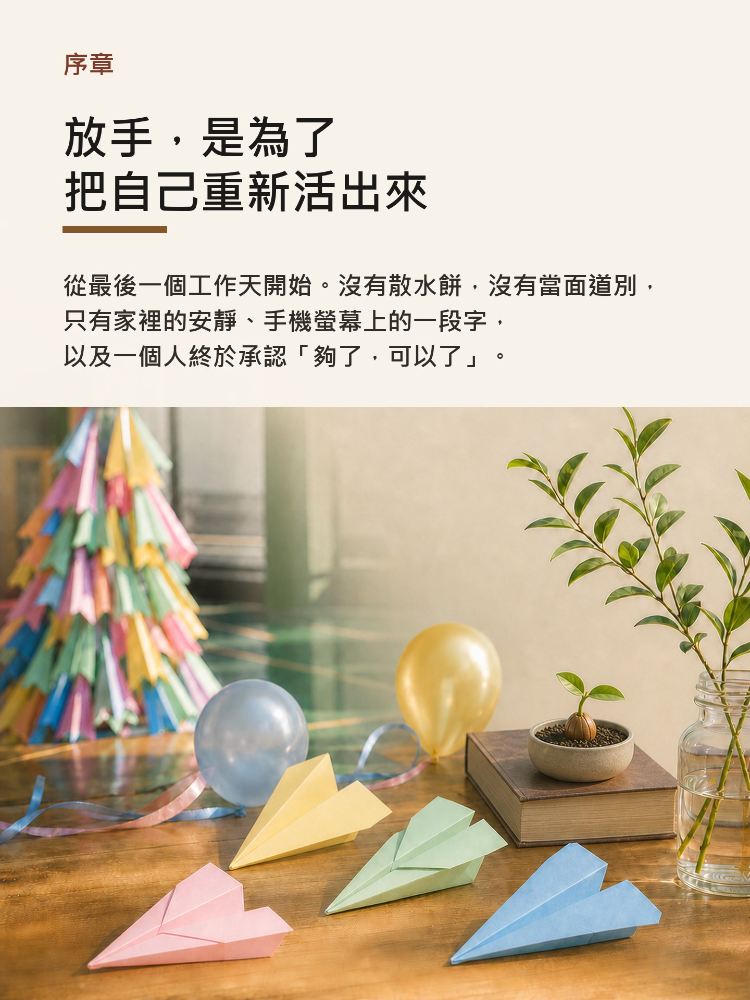
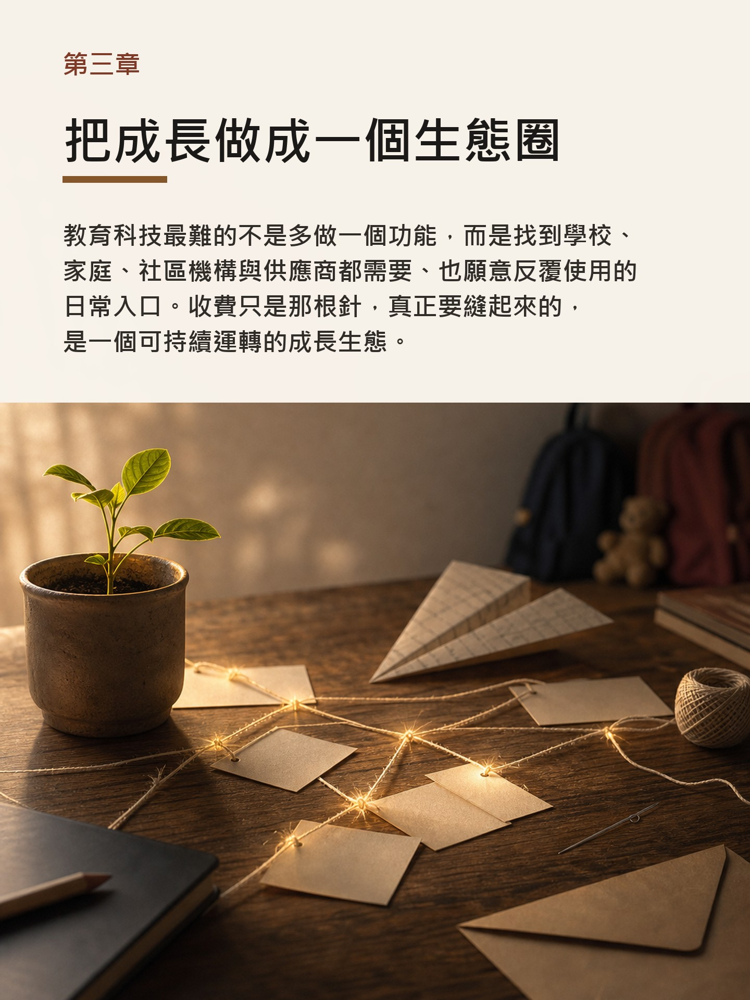
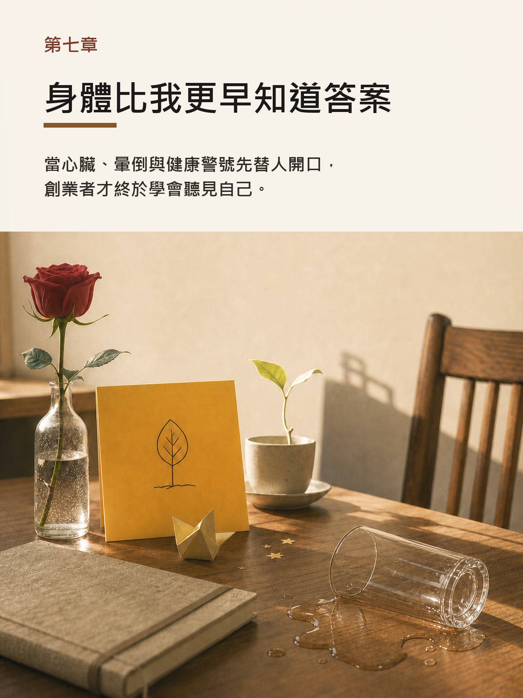

給曾一起建造的人
你可能記得趕版本、追進度、回客戶、兩地支援的深夜。那段日子不易，卻真的有人一起撐過。
閱讀方式
這本回憶錄想邀請讀者走進一段生命，而不是旁觀一間公司的年表。故事從一個安靜的離開開始，回到創業前的選擇、教育科技的信念、疫情下的承擔、成功之後的壓力、身體發出的警號，最後走向放手與第二人生。
如果你曾與 Adam 一起工作，曾在學校和孩子身邊推動改變，或曾在創業路上燃燒自己，這不是一份旁人的故事。它可能也記下了你熟悉的那種相信、辛苦、情義與成長。
書內預覽
這些頁面來自 eBook 章節開場，讓讀者在下載前先看見這本書的語氣、節奏與核心問題。



寫給誰
你可能記得趕版本、追進度、回客戶、兩地支援的深夜。那段日子不易，卻真的有人一起撐過。
如果你曾在學校、家庭與社區之間推動改變，這裡有你熟悉的忙碌、相信與辛苦，也有一份遲來的感謝。
如果你仍在承擔、掙扎、相信與懷疑之間前行，這不是答案書，只是一個過來人的同行。
十章生命路線
從最後一個工作天開始。沒有散水餅，沒有當面道別，只有家裡的安靜、手機螢幕上的一段字，以及一個人終於承認「夠了，可以了」。
由設計師到教育科技總經理，由穩定工作走向未知創業。真正的離開，不是任性，而是認真對待看了十年仍未解決的問題。
我和夥伴走上創業路的起點，是相信孩子的成長不應只被分數定義。數據、活動與家校連接背後，真正想接起來的，是每一個孩子的可能。
教育科技最難的不是多做一個功能，而是找到學校、家庭、社區機構與供應商都需要、也願意反覆使用的日常入口。收費只是那根針，真正要縫起來的，是一個可持續運轉的成長生態。
當現實比想像慢，信念不再只是口號。它要落在現金流、團隊、客戶、決策與每一次撐下去的選擇裡。
疫情令學校的日常突然停了下來，通告、學習安排和家校聯絡，都忽然變得不能斷。那段日子，團隊願意撐下去，是因為學校和家庭的需要就在眼前。
外面看見的是規模和成績，裡面承受的是速度、責任、方向與不能停下來的重量。
當心臟、暈倒與健康警號先替人開口，創業者才終於學會聽見自己。
離開公司之後，真正帶得走的，不是名片上的身份，而是多年磨煉出來的判斷、連結，以及重新開始的能力。
傷口長好之後，不會消失。它會變成一道疤，也會變成一種身上原來沒有的厚度。
電子書留存
適合放進 Kobo 或手機閱讀器慢慢讀，字體大小可以自己調整，像一本可以隨身帶走的小書。
保留固定排版與圖文節奏，適合收藏、列印，或傳給熟悉這段經歷的人安靜翻看。
保留網頁版，方便在瀏覽器裡快速翻閱，也方便日後更新、校對和分享。公開檔案同步放在 GitHub repository，方便讀者回看來源與下載入口。
常見問題
這是 Adam Chan 陳駿霖的創業回憶錄，記錄教育科技創業、相信、建造、承擔、壓力、放手與重新活出自己的生命路線。
Adam Chan 陳駿霖來自香港教育科技圈。1998 年由互聯網與網頁設計起步，2001 年出版《Flash 動之物世界》，其後在港澳學校平台市場深耕十二年並任教育平台公司總經理。2015 年，他共同創辦 GRWTH，推動連接學校、家庭、學生、社區機構與服務供應商的成長生態；GRWTH Pay 於 2019 年獲香港資訊及通訊科技獎金獎。
這本書寫給曾同行的舊同事、教育界朋友、香港初創圈朋友，以及仍在承擔、相信與懷疑之間前行的人。
本頁提供 EPUB 與 PDF 下載，也保留 HTML 閱讀頁方便在瀏覽器試讀。